Esta función sirve para indicar al sistema que los fascículos se publican con una frecuencia o periodicidad específica y están numerados en base a uno o más niveles concretos (año, tomo, época, número), además de contener una fecha que puede incluir los datos referidos a día, mes y / o año. Es importante destacar que, para comenzar a crear un control de cronología y numeración, se debe conocer previamente el esquema de periodicidad de la publicación que se trate.
Por otro lado, todas las suscripciones de las que se van a predecir y recibir fascículos necesitan un control de cronología y numeración para un tipo de edición. De esta forma, una publicación periódica puede tener una edición regular y un suplemento, que se publican con diferentes frecuencias, en cuyo caso se necesitan dos controles de cronología y numeración diferentes, uno para la edición regular y otro para el suplemento.
El procedimiento a seguir para la creación de un control de este tipo es el siguiente:
- Estando en la opción Suscripciones del módulo, hacer clic sobre el número de suscripción para el que se desea crear el control, de entre todos los que se muestren en la lista.
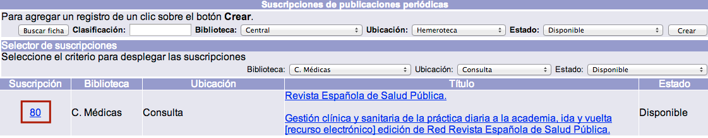
- En la pantalla de creación de controles de cronología y numeración, elegir en primer lugar el tipo de cronología a aplicar, en función de la periodicidad de la publicación original. Los tipos predeterminados que aparecen en la lista desplegable se crean desde el módulo de Administración, por lo que si no hay ninguno que se ajuste a las necesidades, puede ser generado por un operador de este módulo. En el momento de seleccionar el tipo de cronología, los campos que se despliegan se adaptan automáticamente a esta selección. Es decir, el ejemplo que se está mostrando aquí (Año / Volumen / Número (día – mes – año)) ha sido definido desde el módulo de Administración con tres designaciones numéricas: año, volumen y número, y con tres designaciones cronológicas: día, mes y año. Por esta razón se despliegan esos campos asociados.
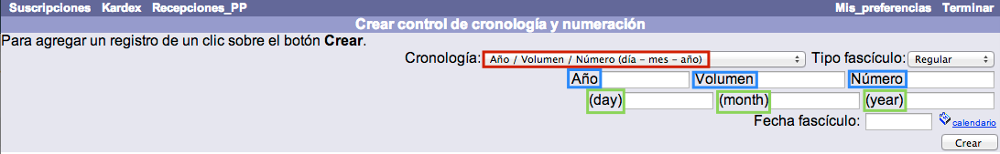
- Elegir el tipo de fascículo (regular, suplemento, anuario, índice) que va a determinar el nivel de enlace de las existencias. Para un fascículo con un tipo de edición regular, el nivel de enlace sería 1, mientras que para un suplemento sería 2. Como en el caso anterior, si es necesario, pueden crearse nuevos tipos de forma sencilla mediante el módulo de Administración.

- Introducir los valores para los campos de designaciones numéricas. En este ejemplo, se ingresan las cifras de año, volumen y número a partir de las cuáles se iniciará la predicción y registro de los fascículos por el sistema.
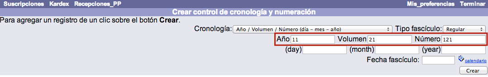
- Introducir los valores para los campos de designaciones cronológicas. En este ejemplo, se ingresan las cifras de día, mes y año en que se publicó el fascículo tomado como referencia para la creación del control. Los datos day, month, y year aparecen en inglés para que sean reconocidos por el sistema al crear las existencias MARC, que contienen los códigos en ese idioma. Sin embargo, no se muestran así en el catálogo al público, a menos que la configuración establecida lo requiera expresamente.
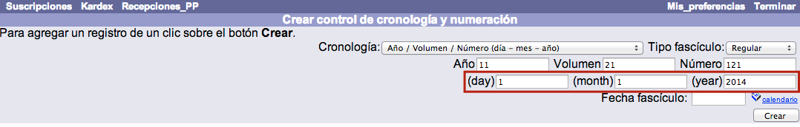
- Introducir la fecha de recepción del primer fascículo, que determinará, a su vez, las fechas de recepción posteriores. Este dato se puede ingresar, bien en el campo de texto correspondiente con el formato aaaa-mm-dd, bien utilizando la opción de Calendario, que se encuentra justo a la derecha del mencionado campo de texto. La asignación correcta de esta fecha es importante porque, si se comienza a predecir a partir de números ya pasados, las fechas de recepción de cada fascículo serán, lógicamente, también pasadas. Este hecho puede provocar que las funciones de generación y envío de reclamaciones produzcan y manden mensajes reclamando estos fascículos de forma errónea.
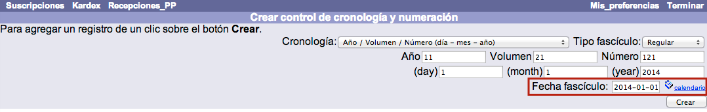
- Hacer clic sobre el botón Crear. El sistema genera el control de cronología y numeración y despliega la pantalla de kardex para comenzar a predecir y recibir fascículos. Este proceso se realiza una sola vez por cada tipo de fascículo cuyos números se vayan a recibir.

Modificación de controles de cronología y numeración
En ocasiones, puede ocurrir que las numeraciones y fechas de los fascículos tengan que alterarse para que, a partir de cierto número, se apliquen otros valores distintos. Por ejemplo, una publicación mensual cuyos fascículos aparecen el día 1 decide publicarlos el día 15 y, además, empezar a contar sus números desde cero.
En casos como ese, lo que se debe hacer es modificar el registro de control de cronología de la suscripción. En este registro, el sistema guarda y actualiza la información del siguiente fascículo que deberá predecir. Sin embargo, antes de realizar cualquier variación en el control de cronología es necesario anular y borrar los fascículos ya predichos.
El procedimiento a seguir es el siguiente:
- Teniendo desplegada la lista de fascículos para la suscripción y cronología deseadas, seleccionar todos los números predichos y aún esperados usando el cuadro selector habilitado para ello. Después, hacer clic en el botón Anular.

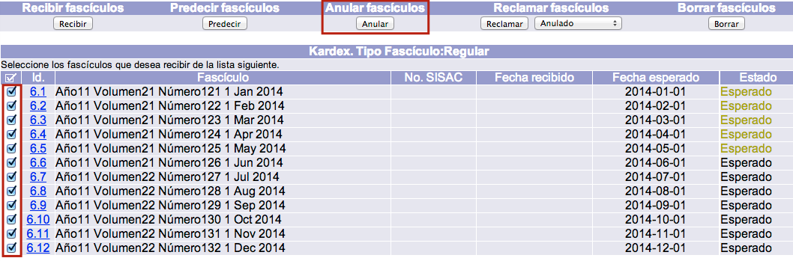
- Al anular los fascículos predichos, estos desaparecen de la lista que se muestra en pantalla (la de Esperados). Para visualizarlos y proceder a su borrado, elegir la opción adecuada en el menú desplegable de la sección Kardex. Tipo Fascículo.

- Seleccionar los fascículos anulados y hacer clic en el botón Borrar. Es importante que los números que se van a borrar hayan sido anulados previamente, para no borrar por error aquellos que presentan un estado diferente, como los recibidos. A partir de este momento, todos los fascículos existentes desaparecen y ya es posible editar el control de cronología de la suscripción para cambiar los datos necesarios.
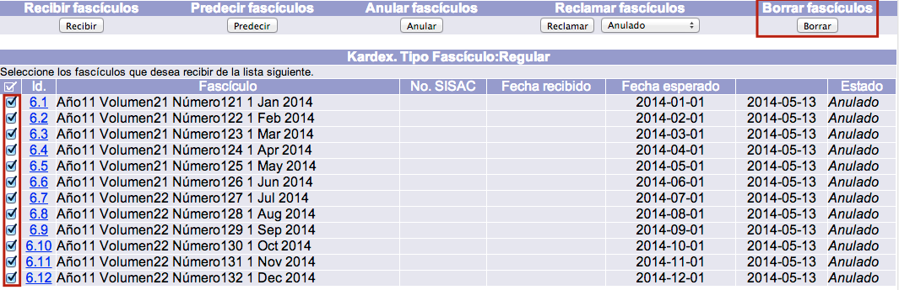
- Para acceder a la mencionada edición del control de cronología, hacer clic sobre el Id de la suscripción activa.
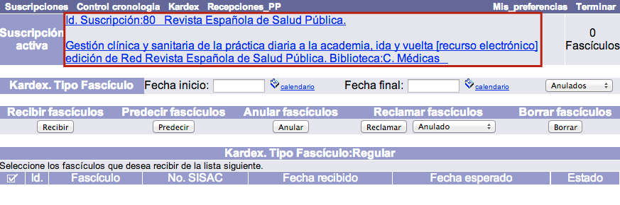
- Se muestra el formulario con los campos detallados del control de cronología. Hacer clic en el botón Actualizar para proceder a realizar los cambios necesarios. Campos que se pueden modificar para iniciar una nueva predicción
- 1er. nivel numeración: en este caso, corresponde al dato Año, con valor 11.
- 2o. nivel numeración: en este caso, corresponde al dato Volumen, con valor 21.
- 3er. nivel numeración: en este caso, corresponde al dato Número, con valor 121.
- Niveles siguientes: el sistema acepta hasta 8 niveles de numeración.
- 1er. nivel cronología: en este caso, corresponde al dato Día, con valor 1.
- 2o. nivel cronología: en este caso, corresponde al dato Mes, con valor 1.
- 3er. nivel cronología: en este caso, corresponde al dato Año, con valor 2014.
- Niveles siguientes: el sistema acepta hasta 4 niveles de cronología.
- Fecha esperado: para que el sistema no genere y envíe reclamaciones de fascículos que aún no se han publicado, también se debe actualizar esta fecha con los datos correctos.
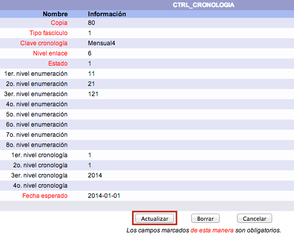
- Llevar a cabo las modificaciones oportunas. En este ejemplo: debido a que la publicación en cuestión ha cambiado la fecha de lanzamiento de sus fascículos, desde principios de mes a mediados, es necesario actualizar el dato 1 – 1 – 2014 a 15 – 1 – 2014.
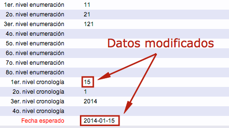
- Para confirmar los cambios realizados, hacer de nuevo clic en el botón Actualizar. Ahora, el sistema está listo para predecir a partir de una nueva cronología. Si se efectúa dicha predicción, pueden verse los datos actualizados.
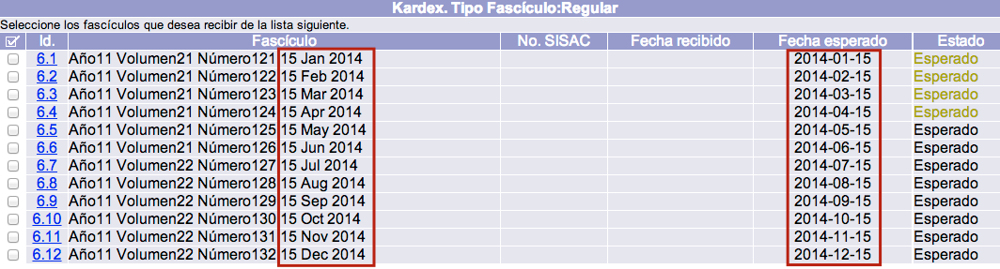
Cambios en control de cronología para suscripciones activas
Otra de las ventajas del módulo de Publicaciones periódicas es la posibilidad de aplicar un nuevo control de cronología a una suscripción que ya está activa, evitando así tener que crear una nueva suscripción si la publicación, por algún motivo, cambia su periodicidad.
Para describir esta función, se toma como ejemplo la publicación Revista Española de Salud Pública, para la que ya se ha creado una suscripción en la sección Control de cronologías y numeración de este manual. Dicha publicación tenía una periodicidad mensual, pero, por motivos económicos, la editorial decide cambiarla a trimestral. No obstante, la institución va a continuar suscrita a ella y, además, no desea perder la información almacenada en el sistema sobre los ejemplares ya predichos y recibidos.
El procedimiento a seguir es el siguiente:
- Estando en la opción Suscripciones del módulo, hacer clic sobre el número de suscripción para el que se desea crear el nuevo control de cronología, de entre todos los que se muestren en la lista.
- Al acceder a la pantalla de creación de controles de cronología y numeración se muestra el control (o controles) que ya ha sido creado para la suscripción.
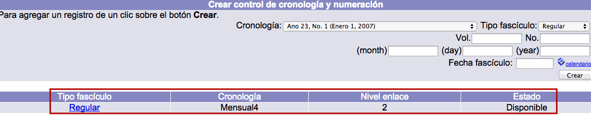
- Elegir el nuevo tipo de cronología de la lista desplegable. Al hacerlo, como ya se ha explicado, los campos que se despliegan se adaptan automáticamente a esta selección. Además, en el caso concreto de esta función, los valores que deben introducirse en los campos mencionados, tanto los de designaciones numéricas como cronológicas, también son colocados de forma automática tomando como referencia el último fascículo predicho, cuyos datos en este ejemplo son: Año 11, Volumen 22, Número 132, 1 Diciembre 2014. Hacer clic en el botón Crear.

- El sistema genera el nuevo control de cronología y numeración y despliega la pantalla de kardex para comenzar a predecir y recibir los fascículos según la nueva periodicidad establecida pero manteniendo igual toda la información acerca de los fascículos anteriores.

- Además, si se consulta la publicación en el catálogo al público, se observa que existe una única suscripción con los fascículos (una vez que se hayan recibido y estén disponibles) organizados de acuerdo a los distintos controles.